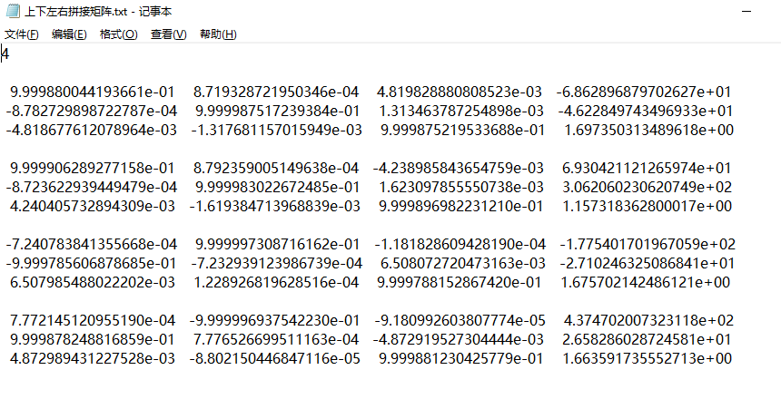
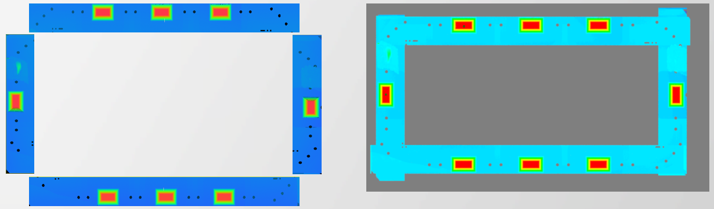
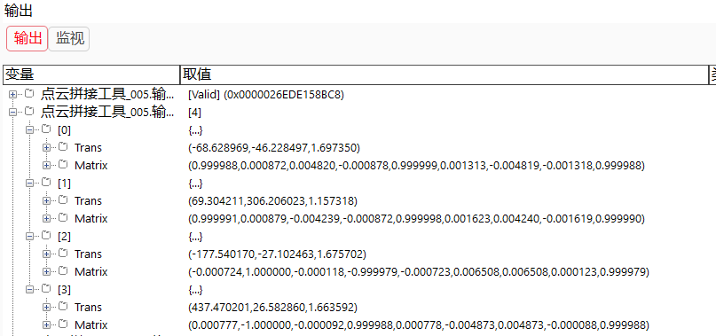

点云拼接工具根据输入的刚性变换矩阵将多副点云图像进行拼接。
该工具主要用于XY或Z方向拼接类项目；比如：
场景1：IPhone手机平面度检测项目
由于测量精度高，该产品需要进行拼接，同时客户提供的测量点坐标是以客户给定产品坐标系来定义的，所以需要我们先进行坐标系对齐，才可以精确地定位到测量点。
场景2：厚度测量项目
Step1:添加点云文件（2-16个）、点云拼接工具，并双击打开工具参数链，链接点云文件，如图3-1所示；
Step2:根据矩阵来源选择不同方式设置拼接矩阵，如在属性栏中设置拼接参数、加载转换矩阵文件（.txt文件），如图3-2所示；
| 参数名称 | 参数描述 |
|---|---|
| 输入点云数据 | 输入待拼接的点云图像 |
| 参数名称 | 参数描述 |
|---|---|
| 拼接所需图像个数 | 需要拼接的图像的个数 |
| 矩阵来源 | 包括两种：属性外部导入和高级界面设置 |
| 标定结果文件路径 | 导入标定文件，标定文件的格式如第7部分所示 |
| 输出坐标系 | 包括两种：世界坐标系和传感器坐标系 |
| 开启并行运算 | 是否开启并行运算，选择是时，算法将开启OpenMp并行计算方式，可以提升计算速度，但可能出现耗时不稳定的情况，选择否时，算法将关闭OpenMp并行计算。 |
| 线程数百分比 | 设置并行运算的线程数百分比，有效范围为 (0, 0.75]，对应表示(0%, 75%]百分比范围。 |
高级界面可以用于设置矩阵如下：
| 名称 | 参数描述 |
|---|---|
| 矩阵 | 在高级界面中输入变换矩阵 |
| 参数名称 | 参数描述 |
|---|---|
| 输出点云数据 | 输出拼接的点云图像 |
| 输出刚性变换矩阵 | 显示刚性变换矩阵 |
| 参数名称 | 参数描述 |
|---|---|
| 输出点云数据 | 输出拼接的点云图像 |
| 输出刚性变换矩阵 | 显示刚性变换矩阵 |
| 执行结果 | 工具执行结果 |
| 执行时间 | 工具执行时间 |
参见“\Samples\3D\点云\点云拼接工具.gvp”。
Step1：利用Polyworks等软件对塔台等靶标进行标定，获取刚性变换矩阵；
Step2：导入刚性变换矩阵到VA中，VA中的矩阵格式如图7_1所示，第一行为拼接图像个数，依次为各个点云图像对应的刚性变换矩阵；

Step3：导入刚性变换矩阵到VA中，使用塔台进图像拼接验证效果，拼接前后如图7_2所示，同时，执行成功后在监视中可以看到导入的刚性变换矩阵，如图7_3所示；


Step4：输入图像切换为物料产品，进行拼接计算即可；